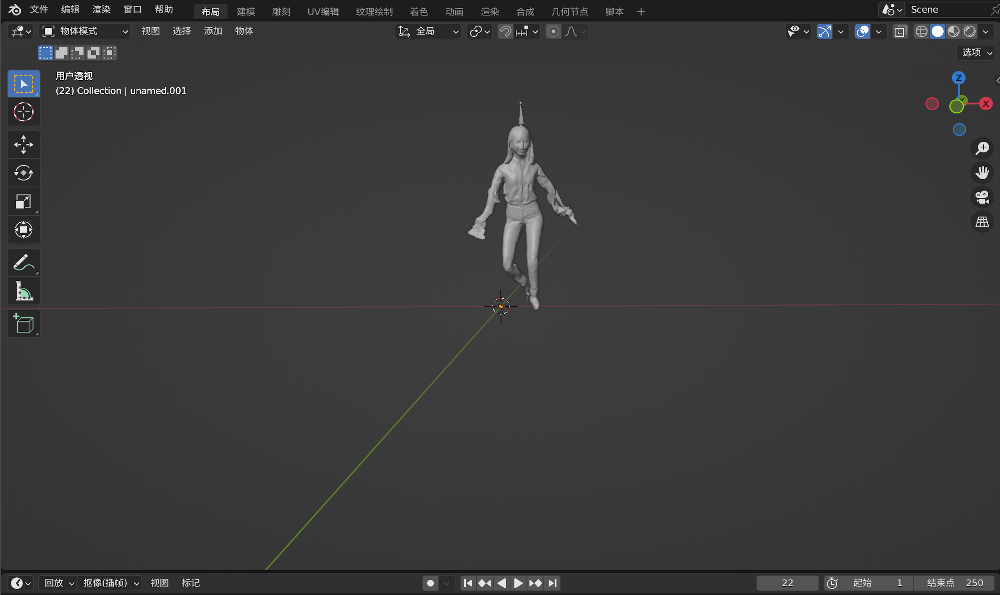
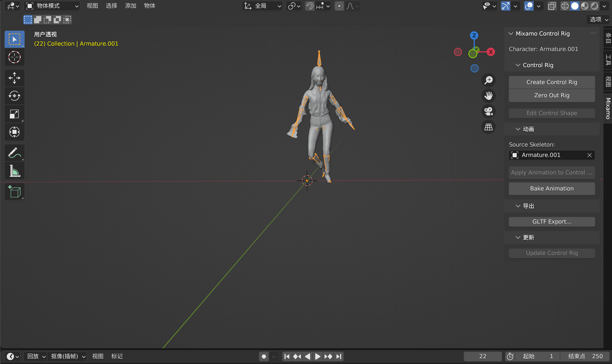
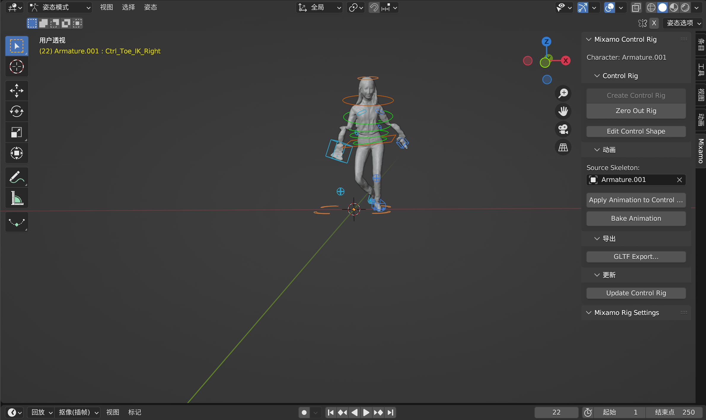
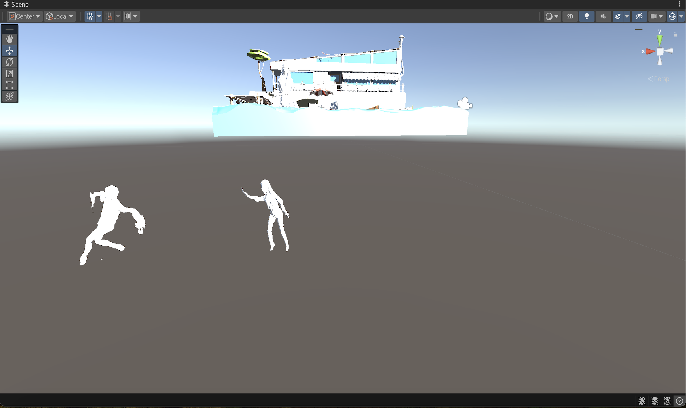

A10 XR延展實智模
專題簡介
組員資料
問題回應
專題系統畫面展示與說明
專題系統畫面展示與說明1
專題系統畫面展示與說明2
專題系統畫面展示與說明3
Blender與Unity應用展示

將綁好骨架的.fbx檔案匯入到blender後就會變成圖片上這個樣子，但此時還沒有辦法對模型進行控制。

需透過側邊欄位上的Mixamo插件去選取模型的骨架，將其轉變爲Blender上可控制的方塊。

轉變完成後就會像圖片上一樣，出現很多以顏色區分的可控制方塊，我們可在每個方塊上透過鍵盤的R鍵去控制該部位的動作或位置。

最後我們會將錄製成動畫的建模丟進Unity裡當成可自由行動的npc或與遊戲場景搭配使用，但目前動畫在Unity上是無法順利運行的。